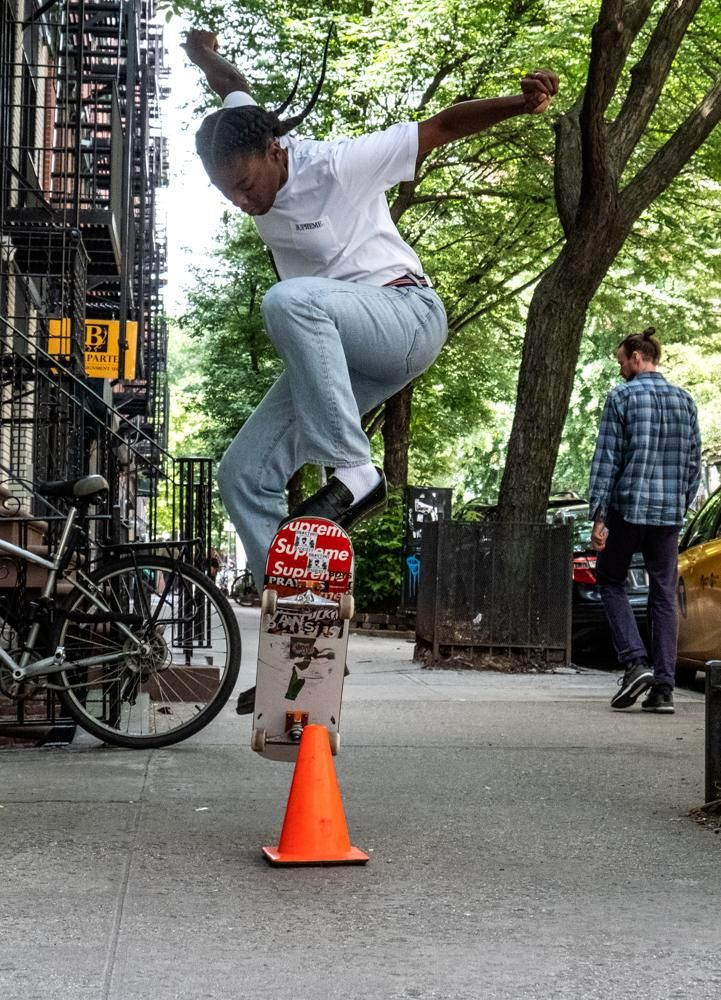

Types of Boards
There are many different ways to skateboard and a wide variety of boards to suit your preference. Some people like to skateboard as a means of transportation, some like to do tricks, and others like to emulate other sports such as snowboarding or surfing. This article will provide a comprehensive guide to help you choose what kind of skateboarding style you want to try.
Longboard

- Good for travelling
- Very Stable
- Fast
Longboards are a great choice for those who want to get from point A to point B with style. Their large and soft wheels can easily cruise over pebbles and cracks in the road, making your riding experience as smooth as possible. They’re great for dealing with the fissured streets of Montreal. There are a few variations in shape but the design mostly seeks to avoid wheel bite and provide a large surface to stand on.
They are heavy, however, and don’t come cheap, so make sure to take good care of them.
Double-Kick
- Best for doing tricks
- Portable
- Maneuverable
Double-Kick boards are normally the first thing people think when they hear the word “skateboard.” They’re the gateway to an entire community of people learning a massive variety of tricks. Pulling a kickflip over a curb is one of the most stylish things you can do on the street. These boards can allow you to ride and grind on many different surfaces like rails and ledges. Learning tricks is a great pastime and a good way to get outside.
On the other hand, learning the tricks that make this type of skateboard so versatile is a difficult process and takes a lot of dedication. Double-kick boards are also a lot more prone to getting caught on rocks and potholes because of their smaller wheels, so they’re not the best choice for travelling. Be careful while learning tricks on these because it’s easy to fall and hurt yourself.Wear a helmet
Carver
- Good for practicing surfing
- Can generate its own speed
- Tight turns
Carvers are the closest kind of skateboard to their predecessor, the surfboard. They’re higher off the ground than the other types and have a special type of truck at the front which allows the rider to generate speed by pumping left and right. They’re very popular among surfers because the motion of riding waves is similar to carving on the street.
You should be careful where you ride these though because if you pick up too much speed the loose trucks could cause you to wobble and bail. These boards are also on the more expensive side.